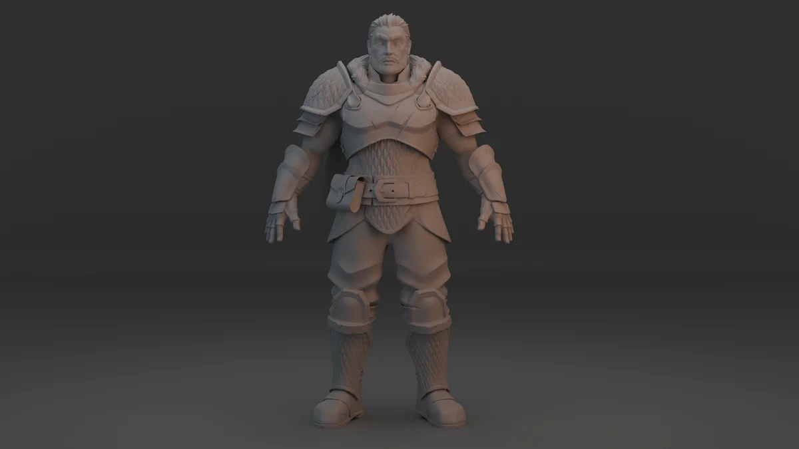

01 / PORTFOLIO
Selected Projects
3D models, sculpts, environments, animation and 2D artwork.
Demo projects are labeled as samples.

KAEL DRAKTHORNE / CHARACTER SCULPT02 / ABOUT
About the Artist
SKILLS
SOFTWARE
03 / CONTACT
01 / PORTFOLIO
3D models, sculpts, environments, animation and 2D artwork.
Demo projects are labeled as samples.

KAEL DRAKTHORNE / CHARACTER SCULPT02 / ABOUT
03 / CONTACT